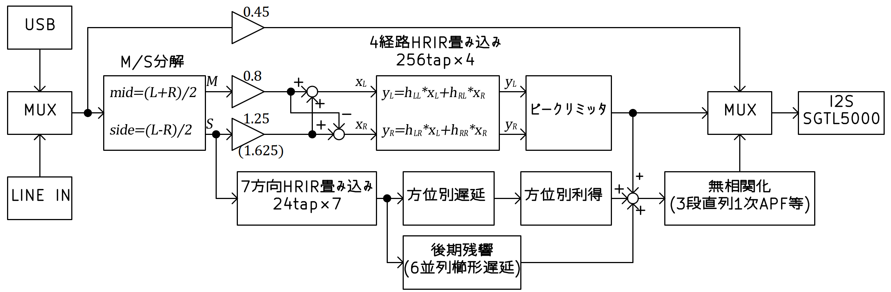

HRIR (頭部インパルス応答) の畳み込みにより頭外定位を実現するヘッドホンアンプ兼USB DAC。 RP2350 + SGTL5000 で、4経路 256タップのFIR畳み込みに加え、方向別反射・後期残響・オールパスによる無相関化までを 48kHz 実時間処理する。
HRTF (Head-Related Transfer Function, 頭部伝達関数) は、ある方向の音源から鼓膜までの音響伝達特性を表す関数。 音は耳に届くまでに、頭部・耳介・胴体での反射や回折を受け、方向ごとに固有の周波数特性および左右耳への到達時間差 (ITD) ・レベル差 (ILD) が生じる。 HRTFはこれらを「音源 → 鼓膜」のフィルタとして数値化したものである。
HRIR (Head-Related Impulse Response) はHRTFを時間領域で表現したインパルス応答であり、信号処理上はこれを音声に畳み込むことで任意方向から聞こえる音を合成できる。本機では英 York大学の SADIE II データベース (人工頭・実被験者の高密度測定データ) を採用し、被験者を切り替えられるようにしている。
ヘッドホンは音源が耳のすぐ近くにあるため、本来は頭部・耳介で起こるはずの反射・回折による周波数特性変化と、左右耳への到達時間差がほとんど失われる。結果として脳は方向手がかりを得られず、音像が頭の中に貼り付いたように知覚される。これが頭内定位であり、独特の聞き疲れや閉塞感の原因となる。
HRIRを音源に畳み込んでからヘッドホンで再生すると、失われていた方向手がかりが信号上に復元され、音像が前方の空間に出る頭外定位感が得られる。
仮想的にスピーカーを自身の左右前方 ±45° に設置した状況を再現する。 左スピーカーから出た音は左耳だけでなく右耳にも回り込み、右スピーカーも同様にクロスフィードを生じる。 したがって耳に届く信号は、各スピーカー → 両耳の計4経路のHRIRからなる 2×2 行列の畳み込みで表せる:
ここで hLL は左SPから左耳、hLR は左SPから右耳に到達するHRIR。 4経路を畳み込んだ結果、左右耳に届く信号が「前方のスピーカーから届いた音」に近づく。
頭部や耳介の形状は人によって大きく異なり、HRTFは本来、個人ごとに全く違うものになる。 他人のHRIRを用いると前後の弁別が不安定になったり音色が不自然になったりする。 本機ではボタン操作で SADIE II 内の複数被験者のHRIRを切り替えられ、最も自然に前方から聞こえるデータを選んで使用する運用としている。
SGTL5000 を I2S マスターとし、Pico 側は PIO で I2S スレーブ受け。 MCLK 12MHz は SYSCLK 252MHz から PWM 整数分周 (÷21) で生成する。 Core1 を DSP 処理に専念させ、Core0 で USB・ボタン・LED の UI 処理を行う 2 コア分担構成。
